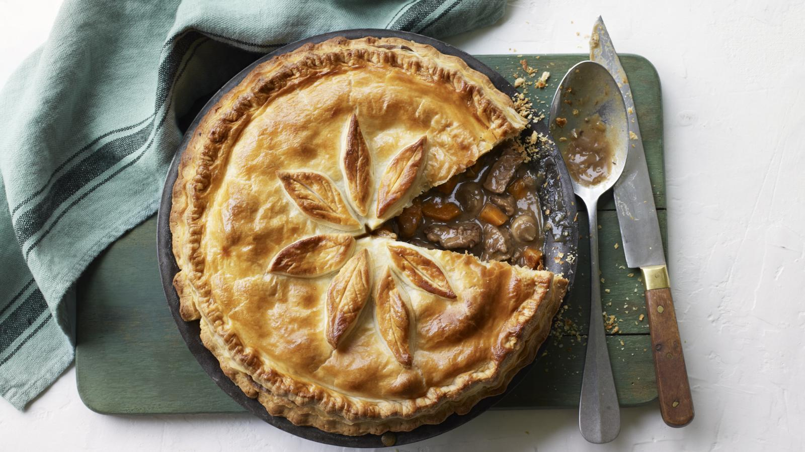

Home
Steak, Stout & Cheddar

Photo from BBC Food
Description
A warm, comforting and rich dish, perfect for the cold weather. Always good with a creamy mash and some simple veg to accompany.
If you want a pie base to go with it, buy some shortcrust pastry for the base, with puff pastry left for the top. It doesn't have to
be Guinness either, any rich stout you enjoy would likely work.
Ingredients
- 3 red onions
- 3 cloves of garlic
- 2 carrots
- 2 sticks of celery
- 4 field mushrooms
- a few sprigs of rosemary
- olive oil
- 1kg of stewing beef
- 1 can of Guinness
- 2 heaped tablespoons plain flour, plus extra for dusting
- 140g Cheddar cheese
- 170g puff pastry
- 1 large egg
Steps
- Peel and chop the onions, garlic, carrots and celery, slice the mushrooms, cut the beef into 2cm cubes, and pick and finely chop the rosemary.
- Preheat the oven to 190ºC/375ºF/gas 5.
- Heat 1 tablespoon of olive oil in a large ovenproof pan over a low heat, add the onions and fry gently for about 10 minutes, or until softened, stirring occasionally.
- Turn the heat up, add the garlic, carrots, celery and mushrooms, then mix everything together before stirring in the beef, rosemary, and a pinch of sea salt and 1 level teaspoon of black pepper.
- Fry fast for 3 or 4 minutes, then pour in the Guinness, stir in the flour and add just enough water to cover.
- Bring to a simmer, cover the pan with a lid and place in the oven for 2½ hours, or until the meat is very tender and the stew is rich, dark and thick, stirring halfway. A perfect pie filling needs to be robust, so if it’s still quite liquidy, place the pan on the hob and reduce until the sauce thickens.
- Coarsely grate the cheese, stir half through the pie filling, then transfer to a pie dish and leave to cool slightly.
- Meanwhile, dust a clean work surface with flour and roll the pastry out to the thickness of a pound coin.
- Sprinkle the remaining cheese over the pie filling. Place the pastry over the top of the pie dish pinching or folding and tucking in the edges to seal, then lightly score the surface with a criss-cross pattern.
- Beat the egg, then brush over the top of the pie and bake directly on the bottom of the oven for 45 minutes, or until the pastry is cooked, puffed and beautifully golden.